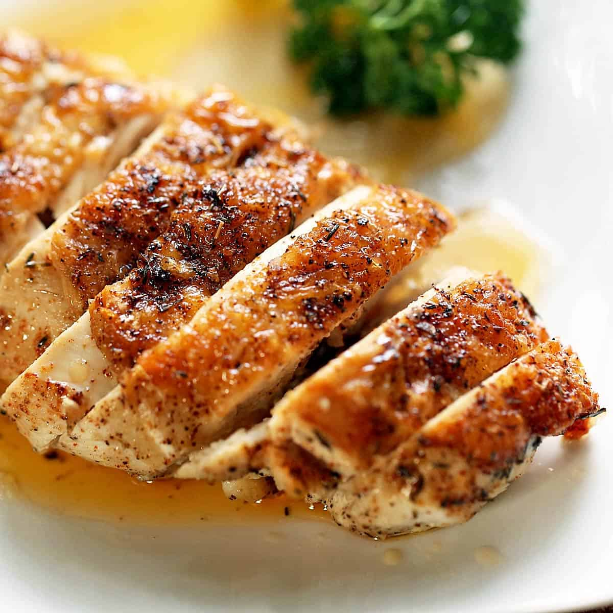

Odin Recipes
Don't Chicken Out

Total Cooking Time: 12 mins
Description
An incredible quick and easy way to serve up chicken breast – seared then simmered in the most amazing honey garlic sauce. Don't be deceived by the short ingredient list! It's absolutely worth the extra step of dusting the chicken with flour because it creates a crust for the sauce to cling to.
Ingredients
- 1 lb chicken breast , boneless and skinless (2 pieces)
- Salt and pepper
- 1/4 cup flour
- 3 1/2 tbsp (50g) unsalted butter (or 2 1/2 tbsp olive oil)
- 2 garlic cloves , minced
- 1 1/2 tbsp apple cider vinegar (or white or other clear vinegar)
- 1 tbsp soy sauce , light or all purpose (Note 2)
- 1/3 cup honey (or maple syrup)